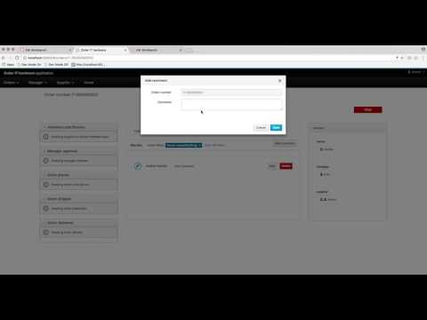

jBPM 7 – case management security
Cases come with so called case roles. These are generic participants that will be involved in case handling. These roles can be assigned to user tasks or used as contact references. Though they are not defined in cases as concrete users or groups of users. Case roles are on case definition level to make the case definition independent of the actual actors involved in given case instance.
Case instances in turn, are those that are focused on individuals that will actually do the work as part of case handling. To provide this required flexibility case management in jBPM comes with case role assignments that allow to provide actual actors or groups for given role. Case role assignment can be given at the time case instance is started or can be set on already active case instance.
Note: Case role assignment can be modified at any time as long as case instance is active though it will not have effect on tasks already created based on previous role assignment.
General recommendation is to always start with case role assignments when starting a case instance as this will prevent situations of assigning tasks to not the correct owners.
How does it work?
By default case instance security is enabled. It does protect each case instance from being seen by users who do not belong to a case in anyway. In other words, if you are not part of case role assignment (either assigned as user or a group member) then you won’t be able to get access to the case instance. This applies to:
- access to individual case instance
- access to case instance details like
- case file
- case stages
- case milestones
- queries for case instances
Authorisation can also be turned off by system property: org.jbpm.cases.auth.enabled when set to false.
Above access is just one part of the security for case instances. In addition, there is case instance operations that can be restricted to case roles. Here is the list of currently supported case instance operations that can be configured:
- CANCEL_CASE
- DESTROY_CASE
- REOPEN_CASE
- ADD_TASK_TO_CASE
- ADD_PROCESS_TO_CASE
- ADD_DATA
- REMOVE_DATA
- MODIFY_ROLE_ASSIGNMENT
- MODIFY_COMMENT
- CANCEL_CASE
- DESTROY_CASE
- REOPEN_CASE
- owner
- admin
security for case operations is configurable via simple property file called case-authorization.properties that should be available at root of the class path upon start of the case application. Format of this file is extremely simple:
